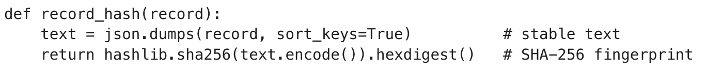
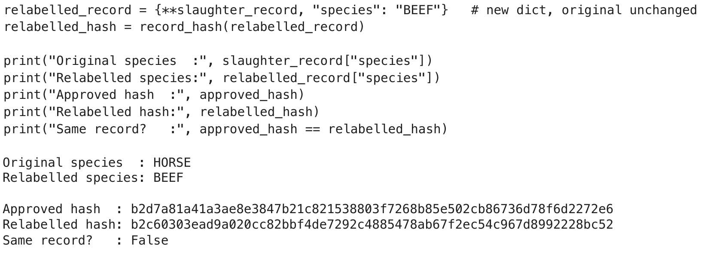
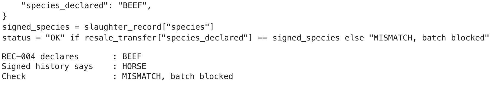
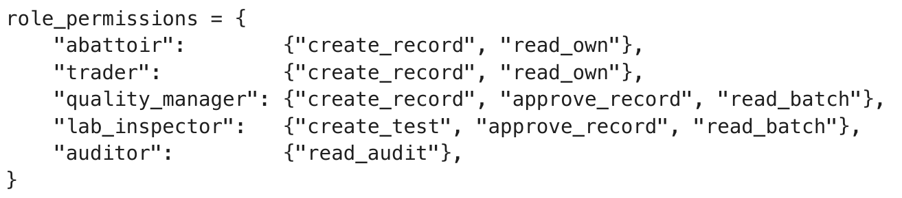
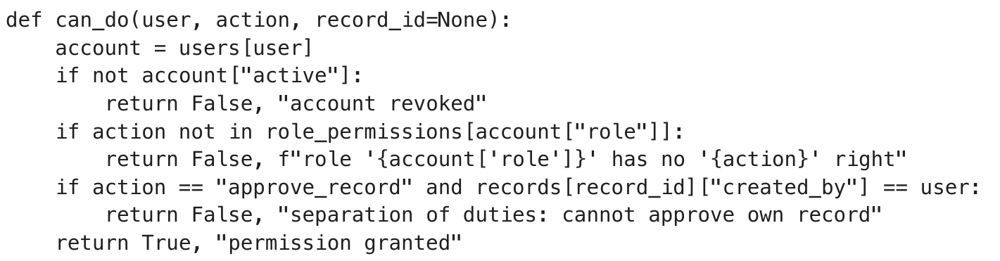
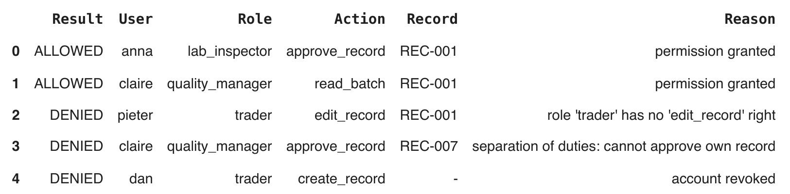

IS511E Blockchain in Business
Mid-term assessment 1, group project
MeatTrace
A shared, tamper-evident record so that meat cannot change its label between suppliers
Elisa Ouillet
Julia Kozhina
Sector: food supply chain, processed meat in Europe
Rabat Business School, 20 October 2026
In 2013, about 750 tonnes of horse meat were sold as beef across Europe, and nobody could quickly see where the label changed
say it was “clearly labelled as horse”(1)
sold it as beef (it denied)(1)
| What happened | Figure |
|---|---|
| Horse meat sold as beef, over about six months (French government)(1) | ≈ 750 t |
| Ready-meal products made with it (French anti-fraud office)(1) | ≈ 4.5 million |
| Companies and countries reached(1) | 28 in 13 |
| EU official tests on beef products positive for horse DNA (193 of 4,144)(2) | 4.66 % |
It is still happening
In a 2022 EU operation, 46 % of 320 imported honey samples were found adulterated, some with forged traceability information.(3)The law asks for traceability, link by link
EU Regulation 178/2002, art. 18: each firm must be able to identify its suppliers and its customers, the “one step back, one step forward” principle.(4) Nobody is required to see the whole chain.(2) European Commission, horse meat test results, 2013.
(3) OLAF report 2023, “No money for fake honey”.
(4) EU Regulation 178/2002, article 18.2
Each firm keeps its own records, so in a crisis everyone blames the next link
How it works today
- Certificates and invoices on paper or PDF, sent by email
- Each firm stores them in its own ERP
- To trace a batch: phone calls and emails, one link at a time
What goes wrong
- A document can be edited or replaced without a trace
- Tracing takes days: Walmart needed almost 7 days to trace mangoes(1)
- No shared version of the facts, so disputes drag on
- DNA tests are rare and not linked to the batch history
Measurable objective
Trace any beef batch back to its abattoir in under 1 hour (today: days), with 100 % of handovers signed.FreshMeals is the client we imagined; stakeholders follow the 2013 chain.3
MeatTrace: every partner signs what it hands over, on one shared record
The client we imagined
FreshMeals SA, a French ready-meal maker.
- €120 M annual sales
- 6 beef suppliers in 3 countries
- ≈ 1,500 beef batches a year
Users: abattoirs, traders, FreshMeals quality team, retailers, an independent DNA lab, the food authority (read only).
How it works, for each batch
Value proposition
- Faster: trace a batch in minutes, not days
- Safer: a relabelled batch is caught at the next handover
- Cheaper disputes: one signed history, not five versions
- Compliant: covers the EU “one step back, one step forward” rule
Why partners will join
- Retailers: proof of origin for customers and inspectors
- Honest suppliers: free portal, and proof they labelled correctly
- FreshMeals: smaller recalls, faster audits
- Lab: steady test volume
Four founding members fund the network and suppliers join for free, because adoption matters more than fees
Funding model: consortium contributions
- FreshMeals, 2 retailers and the DNA lab share all costs equally: about €25k per member per year
- Suppliers and the authority pay nothing, which removes the main barrier to joining
- New buyers pay a membership fee later, which lowers each share
Adoption path
Key performance indicators
| KPI | Today | Target after pilot |
|---|---|---|
| Trace-back time meal to abattoir, per batch | Several days | < 1 hour |
| Signed history beef batches with every handover signed | 0 % | 100 % |
| DNA coverage batches with a linked, signed DNA test | Rare, not linked | ≥ 10 % random sample |
Expected benefits
- A recall is limited to the guilty batches, not the whole product line. One full recall ≈ €2 M
- Trace requests answered in minutes instead of days of staff time
- Proof of origin sells: Carrefour said its blockchain-tracked chicken and pomelos sold better (no figures published)(1)
Resources: development partner, hosting of 4 nodes, security, training, support, governance board. Figures are our own estimates.5
The consortium costs more, but FreshMeals pays less when four members share it
3-year cost = setup + 3 × annual operation. All figures in euros, team estimates (details in appendix B).
| Architecture | Setup | Annual | 3 years |
|---|---|---|---|
| Secure database | €50k | €22k | €116k |
| Consortium, network | €140k | €55k | €305k |
| Consortium, 1 share | €35k | €13.75k | €76k |
Main assumptions
- Developer day at €500. Database ≈ 80 days, ledger and portal ≈ 180 days
- Hosting: €6k a year for the database, 4 nodes × €5k for the network
- Setup includes security audit, onboarding and the legal charter
- Permissioned network: no cryptocurrency or transaction fees
We choose a permissioned consortium, because several independent firms need one history and none of them can be the referee
| Option | Trust | Privacy | Performance | Cost, 3 years | Governance | Verdict |
|---|---|---|---|---|---|---|
| Public blockchain | Anyone can verify | Batches and partners visible to the world | Slower, fees vary | Fees per transaction | No say for members | Rejected |
| Private blockchain run by FreshMeals | FreshMeals is judge and party | Good | Fast | Close to the consortium | One owner | Rejected |
| Permissioned consortium | Every member keeps a copy; nobody rewrites alone | Role rights; prices stay off-chain | Seconds per block | €305k, shared by 4 | Board of members | Chosen |
| Secure database run by FreshMeals | Partners must trust FreshMeals’ admins, who can edit history | Good | Fastest | €116k, cheapest | Simple | Fallback |
When a database is enough
One trusted party runs the whole process, like a bank with its own accounts. A secure database is cheaper, faster and simpler, and we would recommend it.Why it is not enough here
6+ independent firms in 3+ countries, competitors among them, blamed each other in 2013. Nobody accepts that a rival controls the history, and each needs proof it can show to the others.Each handover becomes a signed transaction, and blocks are chained by their hashes
| Transaction | Fields hashed | Signed by |
|---|---|---|
| T1 Slaughter | batch_id species weight_kg site date | Abattoir |
| T2 Transfer | batch_id from to species_declared weight_kg | Sender, then receiver confirms |
| T3 DNA test | batch_id lab result report_sha256 | Independent lab |
Hash. SHA-256 turns the fields into a 64-character fingerprint. Change one letter and the fingerprint changes completely.
Signature. The sender signs the fingerprint with its private key. Anyone checks it with the public key. It proves who issued the record and that it was not changed.
Off-chain. Prices, contracts and full lab reports stay in each firm’s systems. Only their hash goes on the ledger.
Workflow. Create (abattoir records the batch), authorize (role check), verify (hash and signature), agree (3 of 4 validators), audit (shared history).
29726fad…42de
timestamp 2026-10-06T09:14:00Z
T1 b2d7a81a41a3ae8e…72e6
T2 e8ecd7fed07e7885…60b7
T3 0a98d81b19ff396b…05a1
validators 3 of 4 signed (illustrative)
block hash 9c2833fa8fa111e4…b30c
Hashes are real values computed by our Python prototype (slide 10); the validator line is illustrative.
Four known validators agree on each block, and roles decide who may create, approve or read
| Role | Create | Approve | Read | Validate blocks |
|---|---|---|---|---|
| Abattoir | Slaughter records | No | Own batches | No |
| Trader | Transfer records | No | Batches it held | No |
| FreshMeals quality manager | Reception records | Yes, never own records | Full history of batches it buys | Yes |
| Independent DNA lab | Test results | Yes, batches it tested | Batches it tests | Yes |
| Retailer | No | No | Origin and tests of what it sells | Yes |
| Food safety authority | No | No | All records, for audits | Observer, no vote |
Separate duties: nobody approves their own record, the approver is never the submitter, and no single member can accept a block alone (3 of 4 votes).
Consensus: 3 of 4 votes
Our 4 validators are FreshMeals, Retailer A, Retailer B and the DNA lab (the food authority only observes). They take turns proposing the next block. A block is accepted, and its place in the order fixed, when 3 of 4 sign it (BFT voting, like PBFT), so one dishonest member cannot fake or block it. We know all the members, so no mining (PoW) or staking (PoS) is needed.
- Identity: company certificate, plus named staff accounts with two-factor login
- Authorization: every request is checked against the role matrix
- Separation of duties: nobody approves a record they created
- Confidentiality: prices, contracts and full reports stay off-chain
- Revocation: leavers are disabled the same day; the board can revoke a company
- Governance: founders’ board, one vote each. New members and rule changes need 3 of 4. The DNA result settles species disputes
Python test A: changing horse to beef gives a completely different fingerprint



What it means for the business
- We changed one word (HORSE to BEEF) and the fingerprint is completely different.
- Every validator stores the approved fingerprint, so editing the abattoir’s record, or an old block, no longer matches.
- In 2013 the fraud was a new document saying “beef”. That is why we added a rule: the declared species must equal the signed history.
- Limit: the hash proves the record was not changed, not that the abattoir told the truth. That is the DNA test’s job.
Python test B: one function checks every request, with 2 actions allowed and 3 denied



| Result | Who and what | Business risk handled |
|---|---|---|
| Allowed | anna, DNA lab, approves REC-001 | An independent party checks the abattoir’s record |
| Allowed | claire, FreshMeals, reads the batch history | The buyer checks origin before cooking |
| Denied | pieter, trader, edits REC-001 (no 'edit_record' right) | Stops relabelling horse as beef, the 2013 fraud |
| Denied | claire approves her own reception REC-007 (separation of duties) | No self-certification |
| Denied | dan, who left the trading firm, tries to create a record (account revoked) | An ex-employee cannot sign for a partner |
Same 5 tests as the output on the left: 6 users, 5 roles, and no role has an edit_record right. In a real network this check would run on every node, not in a notebook.
A 6-month pilot on one product line, then scale only if tracing takes under 1 hour
| Risk | How we reduce it |
|---|---|
| A partner enters false data | Random DNA tests; receiver must confirm weight and species |
| Confidential data becomes visible | Role rights, least privilege, prices off-chain |
| Members disagree | Written charter, 3-of-4 vote, DNA result settles disputes |
| Costs exceed the plan | Pilot first; secure database as fallback |
| Partners do not join | Free for suppliers, simple portal. TradeLens (300+ members) announced its closure in 2022 for lack of industry collaboration(1) |
Our recommendation
Build MeatTrace as a permissioned consortium of FreshMeals, 2 retailers and an independent DNA lab: €305k over 3 years, €76k for FreshMeals.
Value: batches traced in under one hour, relabelling caught at the next handover, fewer disputes.
Limits: it cannot see inside the meat, so DNA tests stay essential. Without 3 co-funders, choose the secure database.
First pilot target: 100 % of pilot batches traced to the abattoir in under one hour.
Still to build: real identities and certificates, network nodes, web portal, security audit.
Costs per stage are our own estimates (appendix B).12
Appendix A: references
- Al Jazeera (15 Feb 2013). France says horse meat tip-offs ignored. aljazeera.com/news/2013/2/15/france-says-horse-meat-tip-offs-ignored
- AFP, via IOL (14 Feb 2013). Horsemeat: French company blamed. iol.co.za/news/world/horsemeat-french-company-blamed-1470925. French government and anti-fraud office (DGCCRF) findings: ≈ 750 t over six months, ≈ 4.5 million products.
- European Commission, DG SANTE (2013). Horse meat 2013–14: test results. food.ec.europa.eu/food-safety/eu-agri-food-fraud-network/eu-coordinated-actions/horse-meat-2013-14/test-results_en
- European Anti-Fraud Office, OLAF (2023 report, 2022 operation “From the Hives”). No money for fake honey. ec.europa.eu/olaf-report/2023/investigative-activities/protecting-eu-revenue/no-money-for-fake-honey_en.html
- Regulation (EC) No 178/2002, Article 18: traceability. eur-lex.europa.eu/legal-content/EN/TXT/?uri=CELEX:32002R0178
- LF Decentralized Trust (Hyperledger). Case study: Walmart and Hyperledger Fabric (mango trace: about 7 days to 2.2 seconds). lfdecentralizedtrust.org/case-studies/walmart-case-study
- Container Magazine (30 Nov 2022). Maersk and IBM to discontinue TradeLens following lack of industry collaboration. container-mag.com/2022/11/30/maersk-and-ibm-to-discontinue-tradelens-following-lack-of-industry-collaboration
- ESM Magazine (2019). Carrefour says blockchain tracking boosting sales of some products. esmmagazine.com/technology/carrefour-says-blockchain-tracking-boosting-sales-of-some-products-75860
Course material: IS511E sessions 1 to 5 (Pr. Imad El Harraki). FreshMeals, its suppliers, users and all business-plan figures were imagined by our team.
Appendix B: how we estimated the three-year costs (our estimates, in euros)
Secure database run by FreshMeals
| Item | Setup | Annual |
|---|---|---|
| Web portal and database, ≈ 80 days × €500 | 40,000 | |
| Security setup: two-factor login, encryption, penetration test | 6,000 | |
| Supplier onboarding and training | 4,000 | |
| Cloud hosting and backups | 6,000 | |
| Maintenance and support, ≈ 24 days | 12,000 | |
| Security monitoring and yearly audit | 4,000 | |
| Total | 50,000 | 22,000 |
3 years: 50,000 + 3 × 22,000 = €116,000
Permissioned consortium, 4 validator nodes
| Item | Setup | Annual |
|---|---|---|
| Ledger, smart contracts and portal, ≈ 180 days × €500 | 90,000 | |
| Network, identities and certificates | 20,000 | |
| External security audit | 15,000 | |
| Legal charter and onboarding | 15,000 | |
| Hosting, 4 nodes × €5,000 | 20,000 | |
| Maintenance and support, ≈ 50 days | 25,000 | |
| Governance board, audits, certificate management | 10,000 | |
| Total | 140,000 | 55,000 |
3 years: 140,000 + 3 × 55,000 = €305,000; one of 4 shares = €76,250